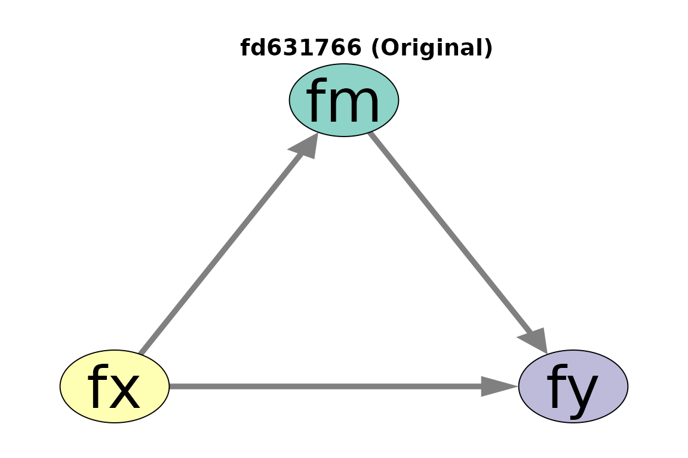
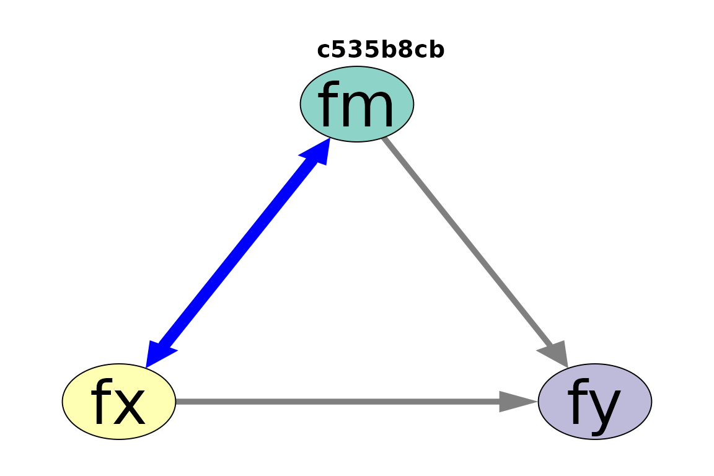
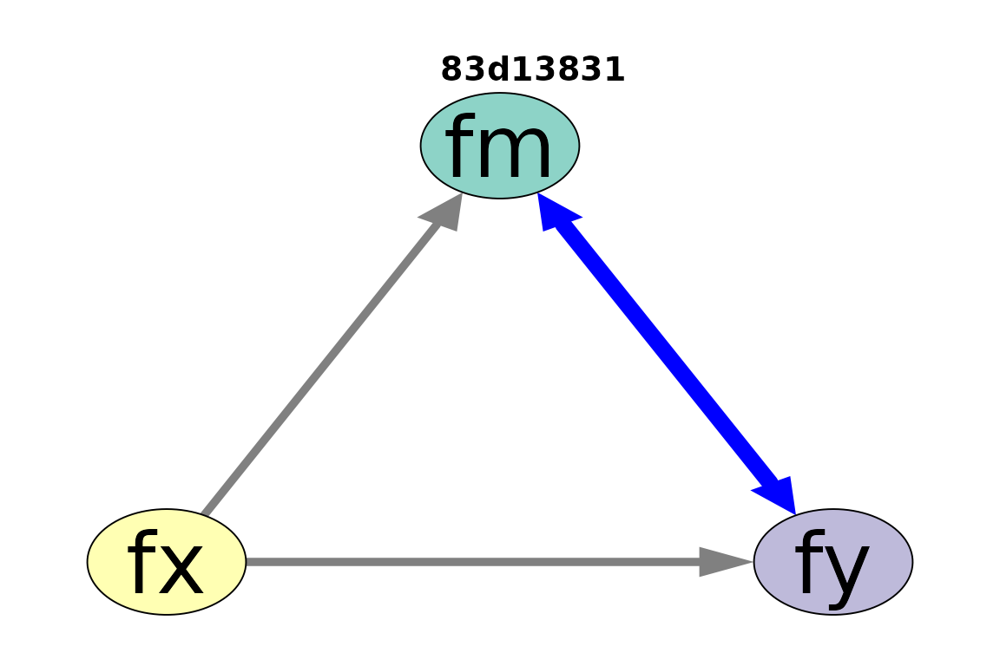
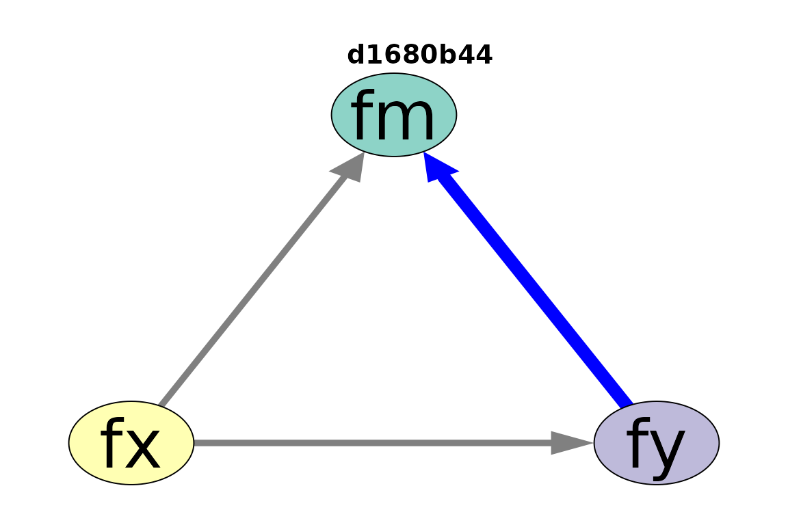

Plot Functions for a List of Models
plot_partables.RdVarious plot functions
for the output of eq_models(),
eq_df_models(), and
similar functions.
Usage
partables_plots(
object,
...,
partables = NULL,
original_model = NULL,
auto_node_color = TRUE,
par_diff_settings = list(color = "blue", width = 2),
fix_pars_fixed_zero = TRUE,
par_fixed_zero_settings = list(color = "white", width = 0),
exclude_original_model = FALSE
)
# S3 method for class 'partables_plots'
plot(
x,
...,
title_mode = c("digest", "name", "none"),
title_adj = 1.4,
title_args = list(),
ncol = 1,
nrow = 1,
scale_plots = c("auto", "always"),
scale = NULL,
elements_to_scale = c("Nodes:width", "Nodes:height", "Edges:width", "Edges:asize"),
original_model_mode = c("include", "exclude", "side_by_side")
)
# S3 method for class 'partables_plots'
print(x, ...)
lhs %p>% rhsArguments
- object
If it is a list of models (parameter tables), such as the output of
eq_models(), it will be used as the value forpartables. If it is apartables_plotsobject (i.e., an output ofpartables_plots(), then it will be updated with any new values for other arguments.- ...
For
plot.partables_plots(), these are optional arguments to be passed tosemPlot::semPaths(). Forprint.partables_plots(), they are not used.- partables
It should be a list of models in the form of parameter tables, such as the output of
eq_models()oreq_df_models().- original_model
The model to which models in
partableswill be compared to. IfNULL, then the plots will be generated without checking for differences between a model andoriginal_model. Model comparison is conducted bymodel_diff().- auto_node_color
If
TRUE, and the number of nodes is less 12 or less, they will be automatically set to different colors. Ignored ifcolorof nodes is in....- par_diff_settings
A named list of settings to configure the change of a parameter from
original_modelto a model inpartables. For now, two settings are supported:colorfor the color andwidthfor the width of an edge (arrow/path).- fix_pars_fixed_zero
If
TRUE, parameters fixed to zero will be modified based onpar_fixed_zero_settings.- par_fixed_zero_settings
A named settings to configure edges (arrows) fixed to zero. For now, two settings are supported:
colorfor the color andwidthfor the width of an edge (arrow/path). Setting the width to zero, the default, effectively hiding an arrow/path.- exclude_original_model
If
TRUEandoriginal_modelis set, the output will not include the plot of the original model, though this plot will be stored in the attribute"original_model", as a one-element list.- x
The output of
partables_plots(), apartables_plotsobject.- title_mode
What will be used as the title. If
"digest", then the digest value of a model, generated bydigest_partable(), will be used as its title. If"name", then its name inxwill be used, which may also be the digest value. If"none", then no title will be drawn with the plot.- title_adj
Adjust the position of the title. Increase this value if the plot is too close to the title, and decrease this value if the space between the plot and its title is too large.
- title_args
A named list of arguments to be passed to
title()when printing the title.- ncol, nrow
The number of columns and rows when drawing the models. Used by
mfrowinpar().- scale_plots
How the models will be scaled. If
"auto", then the models will be scaled based onncolandnrow, usingscaleas a reference. If"always", thenscalewill always be used to scale the models, even if they are drawn one by one.- scale
How the model will be furthered scaled when drawn. If this value is greater than one, then elements in
elements_to_scalewill be increased by this ratio. If this value is less than one, then elements inelements_to_scalewill be decreased by this ratio.- elements_to_scale
Elements in the
qgraphobject that will be scaled based on the values ofscale_plotsandscale.- original_model_mode
How original model, if present will be handled when drawing the models. If
"exclude", then the original model will not be drawn. If"include", the original model will be drawn as the first model, along with other models. If"side_by_side", then the number of columns is always two and the number of rows is always one. In each plot, the original model will be drawn on the left and the other model will be drawn on the right.- lhs
A
partables_plotsobject.- rhs
A function call to be applied to all stored plots. Each plot will be inserted as the first argument.
Value
The function partables_plots() returns
a list of qgraph objects generated
from semPlot::semPaths(), of the
class partables_plots.
The plot method of the output
of partables_plots() returns x
invisibly. Called for its side effect.
The print method of the output
of partables_plots() returns x
invisibly. Called for its side effect.
The %p>% operator returns a
partables_plots object, processed
by the right-hand side function.
Details
The functions provide different ways
to visualize the models. Basic knowledge
of semPlot::semPaths() from the
package semPlot is required to
customize the plots.
See also
See eq_models() on the
type of output supported.
Examples
library(lavaan)
# Model 1
mod1 <-
"
fx =~ x1 + x2 + x3
fm =~ m1 + m2 + m3
fy =~ y1 + y2 + y3
fm ~ fx
fy ~ fm + fx
"
fit1 <- sem(
model = mod1,
data = data_test_3_factor_3_item
)
fit1_1_more <- drop_k(fit1)
fit1_1_more_1_less <- lapply(
fit1_1_more,
add_k
)
partables1 <- combine_partables(fit1_1_more_1_less)
eq_out_1 <- eq_models(
partables1,
original_model = fit1,
parallel = FALSE
)
eq_out_1 <- eq_models(
partables1,
original_model = fit1,
parallel = FALSE
)
layout_i <- matrix(c( NA, "fm", NA,
"fx", NA, "fy"),
ncol = 3,
nrow = 2,
byrow = TRUE)
layout_i
#> [,1] [,2] [,3]
#> [1,] NA "fm" NA
#> [2,] "fx" NA "fy"
p <- partables_plots(
eq_out_1,
original_model = fit1,
layout = layout_i,
label.cex = 1.5,
sizeLat = 15,
edge.width = 5,
asize = 5,
structural = TRUE,
par_diff_settings = list(
color = "blue",
width = 10
)
)
plot(p)



